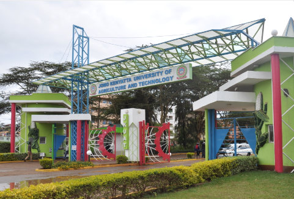

<!DOCTYPE html>
<html lang="en">
<head>
    <meta charset="UTF-8">
    <meta name="viewport" content="width=device-width, initial-scale=1.0">
    <title>JKUAT Map</title>
    <link rel="stylesheet" href="https://unpkg.com/leaflet/dist/leaflet.css" />
    <style>
        #map {
            height: 100vh;
            width: 100%;
        }
    </style>
</head>
<body>
    <div id="map"></div>
    
    <script src="https://unpkg.com/leaflet/dist/leaflet.js"></script>
    <script>
        // Initialize the map and set its view to JKUAT coordinates
        var map = L.map('map').setView([-1.181056, 37.131573], 6);

        // Load and display tile layer on the map
        L.tileLayer('https://{s}.tile.openstreetmap.org/{z}/{x}/{y}.png', {
            maxZoom: 10,
            attribution: '© OpenStreetMap'
        }).addTo(map);

        // Marker for JKUAT
        var jkuatMarker = L.marker([-1.181056, 37.131573]).addTo(map);
        jkuatMarker.bindPopup(`
            <b>JKUAT - Jomo Kenyatta University of Agriculture and Technology</b><br>
            Juja, Kenya<br>
 
        
   

            <a href="https://www.jkuat.ac.ke" target="_blank">Visit JKUAT Website</a>
        `).openPopup();

        // Add custom markers with popups for various places within JKUAT
        var places = [
            {
                coords: [-1.1822, 37.1320],
                popup: `<b>Main Administration Block</b><br>Administrative offices and services.`
            },
            {
                coords: [-1.1805, 37.1313],
                popup: `<b>Library</b><br>Central library for student research and study.`
            },
            {
                coords: [-1.1828, 37.1333],
                popup: `<b>Engineering Workshops</b><br>Practical training facilities for engineering students.`
            },
            {
                coords: [-1.1801, 37.1340],
                popup: `<b>Hostels</b><br>Student accommodation facilities.`
            },
            {
                coords: [-1.1798, 37.1326],
                popup: `<b>Science Complex</b><br>Lecture halls and laboratories for science courses.`
            }
        ];

        // Add markers for each place
        places.forEach(place => {
            var marker = L.marker(place.coords).addTo(map);
            marker.bindPopup(place.popup);
        });

    </script>
</body>
</html>
